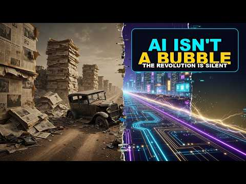

📂 Archived Discovery Interview Transcripts
Raw transcripts and qualitative findings from candidate, practitioner, and enterprise client interviews, supporting our core hypotheses. Focus for this update: Marianna (2026-08-26) — AI voice clone, Dalinea signature format & Roger Rabbit animation engine powered by Fal.ai (H2 / H10 / H17 / H28 / H29 / H30) and Cheuk Ho (2026-08-26) — AI content fatigue & authentic founder voice.
Why this entry is important: Direct customer discovery feedback from enterprise QA & Compliance Lead Marianna (Skool founding member & Sunday collaborator): (1) Audience Memorability Anchor (H2 / H10): In a sea of generic developer videos, combining a recognizable visual signature ("dalinea" / Roger Rabbit mixed reality) with the founder's own cloned acoustic identity creates high retention and immediate recall; (2) Founder AI Voice Clone (H28 / Voice SOP): Replaces sterile off-the-shelf TTS with the founder's customized AI voice model for educational shorts, while keeping Sunday live calls and community asks 100% human; (3) Immediate Operationalization (H29 / H30): Shipped dedicated ElevenLabs Voice Studio (powered by Fal.ai) running on serverless GPUs, integrated with Azure Key Vault (dp-kv-deliverypilot).
🗣️ Verbatim / Field Account
“Use your AI version of the voice with the signature of the dalinea as Roger Rabbit style to make it memorable for the audience.”
📋 Qualitative Breakdown & Action Items
Mixed-reality animation (real screen footage + kinetic AI character overlays) creates high visual stopping power.
Synthesizes Rifat's acoustic identity via Fal.ai ElevenLabs for rapid 8s and 60s educational short generation.
Shipped elevenlabs app deployed on GitHub Pages with Azure Key Vault and dot-acronym script parsing.
Unifying visual and auditory branding drives long-term audience recall and conversion into Skool.
Why this entry is important: Direct customer discovery feedback from senior enterprise engineer Cheuk Ho (National Grid): (1) AI Fatigue & Instant Detection (H28 / H24): Technical peers have high sensitivity to generic LLM copy; when text feels automated, readers immediately realize "it's not you"; (2) Engagement Suppression (H4 / H5): Synthetic phrasing stops practitioners from liking, commenting, or connecting; (3) Written Founder Voice SOP (H29 / H10 / Voice SOP): Extends the founder voice mandate from YouTube CTAs into all written social posts, LinkedIn commentary, and community broadcasts — using AI for research/structuring, but preserving raw human contractor battle scars for the narrative voice.
🗣️ Verbatim / Field Account
“Your posts are too AI generated - most people may not want to engage with they can tell it's not you”
📋 Qualitative Breakdown & Action Items
Eliminate sterile corporate AI templates; practitioners scroll past generic synthetic posts.
Publish raw, first-person contractor experiences, £1,000/day realities, and honest practitioner takes.
Genuine personal stories drive high-intent comments and organic inbound leads into Delivery Pilot.
Use AI for technical outlining and code scaffolding; founder writes and signs off on the narrative voice.
Why this entry is important: Direct strategic customer discovery from founding member Mehmet: (1) Short-Form Video Dominance (H2 / H10): Compares "1k short versus 3dk course"; technical audiences discover content through 30–60s YouTube Shorts and Instagram Reels before committing to deep dives; (2) Founder Authenticity ("Piece From Yourself"): Organic shorts must feature authentic founder presence and lived practitioner reality; (3) Creator Benchmarks (Erhan Meydan, Suna & Akın): Daily news watering holes where AI practitioners cluster; (4) Reverse Response Marketing (H30 / aug-video-animation-2): Reverse high-ranking video premises and inject FDE contractor realities; (5) Monetization Bifurcation (H3 / H12): Critical of £1,000 upfront D2C pricing; £1,000 only works on the corporate/B2B budget side, while D2C requires low-friction recurring membership ($10/mo); (6) Founder Scheduling Guardrail (H29): "Spend time to schedule more videos, do not watch videos and waste time."
🗣️ Verbatim / Field Account
“He mentions I need to focus on shorts. He watches Suna ve Akın'ın AI focused channels. He mentions organic short videos are important — have a piece from yourself. 1k short versus 3dk course.”
“And focus on reverse response marketing with popular videos / sometimes long form. Focus on membership.”
“He is critical on 1000 pound payment — only that could work on the corporate side.”
“Spend time to schedule more videos, do not watch videos and waste time. He is watching shorts and instagram videos on youtube and instagram. Example channel he watches is Erhan Meydan as he watches the news in the AI space.”
📋 Qualitative Breakdown & Action Items
Produce 60s vertical Shorts/Reels with personal founder clips to feed top-of-funnel discovery.
Flip trending AI news topics (Erhan Meydan, Suna & Akın) using enterprise FDE contrarian insights.
D2C membership at $10/mo & $29 prep bundle; strictly reserve £1,000+ packages for B2B corporate training.
Dedicate founder calendar hours to scheduling releases and avoid passive media consumption traps.
Why this entry is important: Direct customer discovery data from practitioner Brian on course structuring, positioning, and global delivery: (1) Global Timezone Dual-Hub Alignment (H5): Identified India (IST) and USA (EST/PST) as the two primary English-speaking developer markets. Scheduling 1-on-1s and live cohort workshops directly aligned to their local timeframes is essential to prevent drop-off; (2) Slot Scarcity as Study Forcing Function (H8): A bounded timeline with strictly limited 1-on-1/VIP slots forces engineers to commit to study schedules rather than indefinitely procrastinating; (3) Failure-Triggered Course Enrollment (H24 / H25): “People enter the courses when audience fails.” Students rarely buy intensive prep during passive self-study; the willingness-to-pay spike occurs immediately after failing an assessment, mock, or interview.
🗣️ Verbatim / Core Discovery Insights
“Brian mentioned he has been taking multiple courses in different time zones and India and USA are the major English speaking timezones we can coordinate 1-1 to their times.”
“And the limited timeline of how many slots is important to study for certification.”
“And people enter the courses when audience fails.”
📋 Qualitative Breakdown & Operational Actions
Establish India IST and US EST/PST synchronized 1-on-1 windows alongside UK baseline.
Cap 1-on-1 VIP coaching to 5 slots/week to create accountability and enforce study milestones.
Position the cohort as an intensive retake/rescue program for candidates who scored <700.
Directly calibrate community operations to practitioner scheduling friction and behavioral triggers.
Why this entry is important: Direct customer discovery data from an IT consultant sitting the Claude Certified Architect Foundations exam: (1) Exam Difficulty & Study Deficit (H27 / H8): Scored 644/1000 (pass threshold 720/1000). Studying general materials alone was not enough to pass; (2) Enterprise Consulting Sponsorship & $100 Pass Bonus (H12): Company paid his full exam entry fee and offers a $100 cash bonus for passing; (3) Big Consulting Firm Incentives (Accenture, IBM, Capgemini): Major consultancies actively subsidize exam fees and offer cash bonuses to build partner tier quota headcount; (4) $29 Exam Prep Bundle ROI Arbitrage (H21 / H3): Spending $29 on practice tests to bridge the 76-point gap is directly subsidized by the employer's $100 bonus ($71 net gain).
🗣️ Verbatim / Field Account
“Jamal has failed with 644 from architect foundations exam. He is working as a consultant. He studied, but that was not enough to pass the Claude Certified Architect Foundations exam.”
“The company paid his entry exam as the company is giving 100 dollar bonus for the people who pass it. Big consulting companies like Accenture, IBM, Capgemini give these incentives.”
📋 Qualitative Breakdown & Action Items
Scored 644/1000; general reading fails on scenario-based exam questions without realistic mock prep.
Accenture, IBM, Capgemini pay exam fees and $100 cash bonuses to hit Claude Partner Network quotas.
Candidate spending $29 to unlock $100 bonus creates a positive financial ROI of +$71.
Consultants seeking architecture mastery represent high-intent leads for Sunday live cohort labs.
Why this entry is important: Direct unprompted WhatsApp video feedback from cohort member B. Highlights key customer discovery friction: (1) Cognitive Overload vs Headspace (H24): Struggling with work crisis and chronic stress (“tired all the time and stressed out… too many irons in the fire”); (2) Anthropic Qualification Intent (H25 / H1): Despite exhaustion, explicitly reaffirms intent to earn the Claude qualification; (3) Voluntary Redundancy as Pivot Catalyst (H30): Exiting corporate job creates the exact window for Forward Deployed Engineer upskilling and contract alliances; (4) Async Video Catch-up (H5 / H8): Relying on video replays during life disruption.
🗣️ Verbatim Transcript (110s WhatsApp Video)
“Hey, good morning, Erdem. How you doing? Yeah. Anyway, this is a quick video just to apologize that I've not been able to make it to the class, you know. I know you're putting a lot of effort in it, and I just felt disappointed that I've not been able to make it. I said no, you know, it's not a very good time for me. I'm struggling with the work situation. So, yeah, I don't think it was a right time for me to be learning, and it's a new yet, you know, although I'm definitely going to be doing the Anthropic qualification, but I'm just trying to find space, my head, and deal with the work situation, and find a new job.”
“So, I've signed up for the voluntary exit, so I'm going to leave clean, really good for it. Yeah, possibly end of this, end of next month, or something like that. So, yeah, that's what I just wanted to say, like, you know, yeah, I will catch up with the videos, but I just want to send you personal apologies that I've not been able to make it to the class, or just because I've just got a lot of things I'm chasing after at the same time, too many irons in the fire, so, you know, and one of them, I'll still suffer, as you can see, just tired all the time and stressed out, basically.”
“But anyway, keep up the good work here. I'm hoping to come to the class next week, or actually, no, I won't, don't let me lie, plus it's my birthday, and then the weekend, so I don't know what I'll be doing, but yeah, if not, I'll be joining the week after. Okay, take care, my friend. Thank you so much, speak soon, bye.”
📋 Qualitative Breakdown & Action Items
Career survival crises temporarily block synchronous learning; avoid student guilt.
Anthropic credential remains the target goal once situational stability is restored.
Voluntary exit opens the window for full-time Forward Deployed Engineer upskilling.
Provide accessible video replays to keep disrupted members progressing.
Why this entry is important: Direct real-world technical screen with HCL for a UK enterprise client. Captures critical market realities: (1) The "Pre-AI Era" Mandate: Enterprise clients explicitly forbid AI in live pipelines (“Please do not mention AI—focus on hands-on work from the pre-AI era... mostly manual hands-on execution”); (2) Certification Irrelevance (H25 / H1): Panel confirms GKE certification is not needed if hands-on cluster mastery exists; (3) Dual-Track Contracting Posture (H30): Founder articulates the clean separation between $1.3M+ enterprise contracting and off-hours AI community mentorship.
🗣️ Verbatim (Captured Customer Discovery)
“Rufat: All right, I don't have the GKE certification. Is that an issue?
Vidya: No, certification is not needed if you have hands-on expertise handling clusters.”
“Vidya: Can we focus more on what contributions you made in terms of traditional DevOps? Please do not mention AI—focus on hands-on work from the pre-AI era.”
“Rufat: The AI community work is mostly volunteer work to help people navigate global job shifts. I make my living working on production systems and enterprise DevOps. When working for corporate clients, I stay quiet, focused, and deliver solutions without unnecessary distraction.”
📋 Qualitative Breakdown & Action Items
Enterprise technical panels care about cluster troubleshooting and Terraform, not paper cert badges.
Clients stick to Backstage 2.0, Jenkins, Vault, and Terraform, blocking rogue AI agents in production.
Quiet execution on enterprise contracts (£500–£1k/day) while building AI community in off-hours.
Calibrate to client culture and requirements without pushing unsolicited technologies.
Why this entry is important: Founder sent a direct Skool live URL. Tuncer could not drop in. Public group visibility (H5 Premise 11) does not make skool.com/live/… an ungated room. Join still requires a Skool account. Not a paid-enrollment signal.
🗣️ English translation (verbatim intent)
11:03 Rifat: https://www.skool.com/live/X2BqqpQjvZF
11:05 Tuncer: He had gotten in before. But I don’t know the password and so on.
11:05 Tuncer: I tried again the same way with another email.
11:05 Tuncer: I’ll deal with it later.
Original Turkish: “Eskiden girmişti. Ama şifresini filan bilmiyorum. Yeniden de denedim aynı başka mail ile. Bir ara uğraşırım.” First name only on this page.
📋 Product feedback
- 🚪Live URL is not a guest pass.
/live/…still demands Skool signup / login. - 🔑Password reset friction. Prior membership is useless if the password is forgotten; a second email hit the same wall.
- ⏳Drop-off. “I’ll deal with it later” is how a Sunday seat is lost in the first two minutes of a WhatsApp invite.
- 📤Share this instead: How to join the Sunday call — group URL first, not
/live/.
Why this entry is important: Direct customer discovery feedback from Mariana, Brian, and Anna (UWISE Cambridge) in AI Cohort Session 9. Identified critical retention friction: late Sunday 2-hour open-ended discussions cause cognitive fatigue and make newer learners feel “unprofessional and scared away.” Established an immediate operating overhaul: (1) Cap live cohorts to 60 minutes, (2) Test 10-10-15 sprint structure (5-10 min intro, 10 min demo, 15 min Q&A), (3) Define 3-tier preset projects (Foundational, Intermediate, Architect) with published Preconditions and Postconditions, and (4) Establish weekday 1-on-1 VIP workshop slots (Monday Security, Tuesday Setup, Friday HITL from 19:00–21:00 UK).
🗣️ Verbatim (Captured Customer Discovery)
“You are trying to run the cohort where people can discuss items freely... But they are not on a similar level as you, and they feel very unprofessional. You are feeding them with information that makes them feel that they know more... they got scared and didn't come back.” — Mariana
“If you want to cover a wide skill level, you should have preset projects: Foundational (clock app), Intermediate (guided execution), Architect (complex custom infrastructure). That way, people learn the handles and terms before getting hit with architect-level jargon.” — Brian
“There's also a big difference between a service and a learning opportunity: Service is 'Pay me and I will build it for you.' Learning is 'We go through the gears together step-by-step so I learn how to build it myself.'” — Brian
📋 Qualitative Breakdown & Action Items
60-minute limit on live group talks to eliminate cognitive exhaustion (H5).
5–10 min intro, 10 min live lab execution, 15 min Q&A (H8).
Monday (Security), Tuesday (Setup), Friday (HITL) 19:00–21:00 UK (H30).
Publish Preconditions and Postconditions for all modules (H24).
Why this entry is important: Direct customer discovery feedback from Charles (Senior Consultant at Capgemini Invent, Pearson VUE Claude Associate score 917/1000). Charles highlights an essential nuance in learner psychology: for personal exploration without external client deadlines, there is no acute time pressure demanding immediate AI automation. Instead, learning is experienced as a deliberate, artisanal craft: “Learning is like cooking steak - low and slow. All part of the fun 🥳”. This provides a crucial counterweight to pure fear-based urgency (H24) and validates that community curriculums must nurture deep, self-paced exploratory joy alongside high-velocity contractor execution tracks (H30 · H29 · H8).
🗣️ Verbatim (Captured Customer Discovery)
“Not a strong need for AI as I'm not on time pressure with personal projects. Learning is like cooking steak - low and slow. All part of the fun 🥳”
📋 Qualitative Breakdown
Personal projects lack external commercial deadlines, eliminating the artificial urgency for rushed AI automation.
Learning is savored like cooking steak—deep, unrushed tinkering yields authentic retention and intellectual joy.
Enterprise consultants under £1k/day pressure adopt AI aggressively; personal creators seek unhurried craftsmanship.
Preserves the fun of programming while offering multi-speed tracks in Skool (fast-lane FDE vs craft exploration).
🔍 Strategic Alignment with Product Strategy
- 🥩The “Cooking Steak” Persona (H24 · H29): Balances emotional fear of obsolescence with intrinsic passion and fun in technology.
- 🗺️Two-Lane Delivery Model (H30 · H8): High-intensity live lab sprints for commercial contractors + self-paced deep-dive modules for artisanal mastery.
- 📄A4 PDF Generation: Available via the 1-Page A4 PDF tool.
Why this entry is important: Direct customer discovery feedback from Anna (Ukrainian professor and founder of the UWISE community in Cambridge). Anna joined the live cohort once and flagged critical friction: 2 hours is too long and causes mental exhaustion on Sunday evenings; open-ended technical delivery is “too complicated, too quickly, too much information at once.” Crucially, she proposed the “5-10-5” pedagogical methodology: 5 min instructor demo/explanation → 10 min attendee active hands-on execution with instructor assistance → 5 min targeted Q&A, strictly capped at 3 tasks per session (40–60 minutes total). Directly informs H8 (Live Cohort PMF & Lab Pacing), H29 (Active Listening & Iteration), H2 / H10 (Micro-format retention), H5 (Sunday Live Cohort Duration), H17 (Cambridge Academic/Community Onsite), and H24 (Cognitive Overload Friction).
🗣️ Verbatim (Captured Customer Discovery)
“Yesterday I got feedback from Anna who joined us once. She is the Ukrainian professor and the founder of the UWISE community in Cambridge.”
“She said that it was too complicated for her, too quickly, too much information at once. And Sunday evening is not that good time, plus 2 hours for her it's too much. She cannot stay focused for so long.”
“She suggested to try the methodology 5-10-5: 5 minutes you are explaining and showing how to execute the task. 10 minutes we are trying to execute it. You are helping. 5 minutes Q&A. Then the next task. 3 tasks for one session is enough. It means 40 minutes - 1 hour.”
📋 Qualitative Breakdown
2-hour sessions exceed focus limits; Sunday evening fatigue amplifies cognitive overload.
20-minute structured sprints: 5 min demo → 10 min lab execution → 5 min Q&A.
Limit each session to exactly 3 modular tasks (40–60 min max duration).
Eliminates learner fatigue, guarantees hands-on completion, and builds confidence.
🔍 Strategic Alignment with Product Strategy
- ⏱️5-10-5 Cohort Architecture (H8 · H29): Replaces marathon lectures with 3 crisp 20-minute execution sprints.
- 🔗Synergy with Marianna's Pre-Session Videos (H2 · H10): Watching short tool primers before class empowers the 5-minute explanation and frees up the 10-minute lab.
- 🎓Cambridge Community Connection (H17): Direct bridge to UWISE Cambridge academic and founder workshops.
Why this entry is important: Direct customer discovery feedback from enterprise Quality & Compliance Lead Marianna (named corporate partner for H17). Marianna validates the Sunday AI Brain collaborative sessions and proposes co-creating a Practical Workshops Programme for enterprise compliance and testing teams. Crucially, she advocates a flipped classroom model: creating short (2–4 min) introductory AI videos before each Sunday class covering tool capability, utility, installation, and dependency gotchas so that live cohort time is dedicated 100% to screen-shared execution and high-leverage architectural builds without installation friction. Directly advances H17 (Corporate Pilot), H2 (Short Video Format), H10 (Video Retention & Utility), H30 (FDE Toolchains), H8 (Live Cohort PMF), and H29 (Listening Loop).
🗣️ Verbatim (Captured Customer Discovery)
“Let's go through the AI Brain on Sundays. I will create a practical workshops programme based on our sessions. I can see what is needed when we are working together. Currently you are doing great. Skool and shirt [short] AI videos look good.”
“I thought you can create short AI videos introductions (next session preparation) about tools that we are going to try. What it does, why it's useful, how to install it, etc. Short introduction lectures (few minutes). Preparation for the next class. Some obvious basics that are important to know and to be aware of some important details, dependencies, tech nuances, etc.”
📋 Qualitative Breakdown
Sunday AI Brain live sessions provide direct visibility into learner needs and practical friction points.
Front-loading tool installation and basics into 2-4 min async micro-videos before live sessions.
Strong positive feedback on Skool hub structure and animated short video content quality.
Pain: Live setup friction & dependency traps.
Gain: Pre-class clarity + enterprise practical workshop syllabus.
🔍 Strategic Alignment with Product Strategy
- 🏢H17 Practical Workshops Programme (H17): Enterprise co-design with Marianna directly seeds the B2B corporate training pilot curriculum.
- 🎬Flipped Classroom Micro-Videos (H2 · H10): Modular 4-step structure (What / Why / Install / Dependencies) primes attendees before Sunday live sessions.
- 📄A4 PDF Generation: Available via the 1-Page A4 PDF tool.
Why this entry is important: Direct customer discovery evidence explaining contractor earning power, the disposability equation, and client purchasing psychology. Brian explains that complex infrastructure knowledge (Kubernetes, CI/CD, Agentic AI) dictates real market compensation (“skills pay the bills”) and eliminates engineer disposability (“the more you know, the less disposable you are”). Critically, clients and teams suffer from rule fatigue and do not want to master intricate edge cases themselves—they gladly pay premium day rates for a trusted practitioner who knows the rules and handles execution for them. Directly validates H30 (FDE / Contractor Roadmap), H1 (Skills Demand), H25 (Judgment vs Trivia), and H24 (Fear of Obsolescence).
🗣️ Verbatim (Captured Customer Discovery)
“skills pay the bills, the complex knowledge needed to pay the bills like kubernetes and ci cd, the more u know the less disposable you are, and people are ignorant they dont want to learn all the rules but they wanna deal with some one who knows the rules and could help them in the process rather themselves figuring it out.”
📋 Qualitative Breakdown
Complex infrastructure systems (Kubernetes, CI/CD, AI) create real revenue leverage and defensibility.
Clients hire specialized practitioners rather than forcing internal teams to learn intricate rulebooks.
Engineers with shallow skills get commoditized; deep architectural mastery unlocks high contractor rates.
Pain: Disposability anxiety + client rule fatigue.
Gain: Irreplaceable FDE status + £500–£1,000+/day positioning.
🔍 Strategic Alignment with Product Strategy
- 💼Forward Deployed Engineer Model (H30): Confirms clients do not want training manuals; they hire contractors to guide them and take away operational complexity.
- 🛡️Career Defensibility & Anti-Disposability (H24 · H25): Validates that anxiety over being disposable drives practitioners to master complex systems in live cohorts.
- 📄A4 PDF Generation: Available via the 1-Page A4 PDF tool.
Why this entry is important: Direct customer discovery evidence from an independent IT contractor confirming the two-tier certification bifurcation (H25), the contractor upskilling ROI thesis (H30), and macroeconomic AI workforce dynamics (H24). Tomiwa passed the Claude Associate exam in 2 days (self-intuitive) and skipped Developer to target Solutions Architect in September after 1 month of prep. Self-funds certifications to win client engagements. Highlights that engineering teams will shrink from 20 to 5 AI-augmented engineers and that professionals not adopting Claude/AI will be obsolete in 2 years, while human-centric consulting (sales, pitches, understanding human behavior) remains irreplaceable.
🗣️ Verbatim (Candidate Inputs & Perspectives)
“Passed the associate certification exam after studying for only two days, finding it self-intuitive. Decided to skip the developer certificate to focus on becoming a solutions architect, planning to take the architect exam in September after a month of preparation.”
“Instead of large single-discipline teams (e.g. 10 DevOps engineers), companies will need smaller, highly productive teams (e.g. 5 multi-skilled engineers using AI tools, plus 5 shifted to client-facing business analyst roles). AI cannot perform human-centric tasks like selling, pitching work, understanding client problems, or navigating human behavior.”
“Professionals who do not adopt AI tools like Claude to accelerate problem-solving will be left behind within two years.”
🤝 Founder Counterpart & Delivery Pilot Community Initiatives
- 🏆Certifications & Repo Pruning: Completed Claude Architect after 2 months of study. Pruning 500+ GitHub repos to show only high-value starred projects to avoid sending negative/diluted signals.
- 🏛️3-Tier Skool Engagement: Viewing ($0 Free), Screen-Sharing ($1/mo Cohorts), and 1-on-1 Setup ($250/yr VIP with Mon/Tue/Fri 7pm UK slots).
- 🤖Hands-On AI Deployment: Security guardrails, HITL controls, autonomous agent toolchains (job apps, contractor timesheets), and Second Brain setups.
- 🚀Forward Deployed Engineers: Enterprise site work with legacy systems (NISO, OpenShift clusters) and co-bidding contractor alliances (H30).
📋 Qualitative Breakdown
2 days for Associate (intuitive); 1 month dedicated prep for Architect in September.
Self-funds exam fees; uses Claude to accelerate problem-solving and client pitches.
Passed Associate; skipped Developer to aim straight for high-value Solutions Architect.
Pain: 2-year obsolescence window; no employer subsidy.
Gain: Client leverage, lean 5-person team power, FDE contractor day rates.
🔍 Strategic Alignment with Product Strategy
- 🎓Two-Tier Funnel Proven (H25 / H21): Associate functions perfectly as the top-of-funnel fast-win conversion trigger; Architect functions as the high-retention, high-ticket live cohort product.
- ⚡Team Compression & FDE Alliance (H30): Smaller 5-person AI teams need multi-skilled FDE contractors who guide client stakeholders through architecture and human behavior.
- 📄A4 PDF Generation: Available via the 1-Page A4 PDF tool.
Why this entry is important: Surfaced three vital practitioner insights: (1) Custom Environment & Infrastructure Demand: Rakesh and the cohort audience expressed a strong need to set up their own custom developer environments and cloud infrastructure tailored to their individual hardware and enterprise workflows. This directly connects to Rifat Erdem Sahin's proven instructor track record — his primary top-selling cash cow course on Udemy is “Infrastructure as Code”. In response, Rifat is planning a modern AI-powered evolution: “Infrastructure as Code with AI” (Terraform, Docker, and agentic orchestration automated with AI) as a high-value community and Stage 3 product. (2) Macroeconomic Tailwinds: Rising UK Employer NI taxes incentivize hiring agile outside-IR35 contractors (H30). (3) Skool Discovery SOP: Recurring Monday email digest summarizing past cohort recordings/takeaways (H5 · H29).
🗣️ Verbatim (Captured Customer Discovery)
“The audience and Rakesh wanted to be able to set their environment and infrastructure that is custom for them.”
“The national insurance getting higher and the payment are increasing said by Rakesh the overhead for employment.”
“In Skool the cohorts are not clear.”
📋 Qualitative Breakdown & Strategic Opportunity
Learners struggle with fragmented local Docker/cloud setups and need tailored, repeatable environment automation.
Manual setup troubleshooting during live sessions, consuming cohort bandwidth that should be used for live architecture practice.
Founder's historic top-earning cash cow course on Udemy is Infrastructure as Code, proving deep mastery and instructional PMF.
Pain: Custom environment setup friction.
Gain: New course “Infrastructure as Code with AI” released to Skool + Stage 3 roadmap.
🔍 Strategic SOP & Stage 3 Roadmap Action
- 🏗️New Course: “Infrastructure as Code with AI” (Stage 3 Product Expansion): Leverage Rifat's existing Udemy IaC cash cow IP to build an AI-native edition (Terraform + AI agents + custom local environments) for Skool and commercial release.
- 📧Weekly Cohorts Digest SOP (H5 · H29): Monday email digest to all members summarizing previous cohort recordings and publishing next Sunday 9pm agenda.
- 💼FDE Contractor Thesis (H30): Custom infrastructure mastery accelerates members toward £500–£1,000+/day enterprise contracting roles.

Why this entry is important: Second independent person, same video, same objection. They do not disagree with the content. They reject an automated voice when the video is selling Skool. Conversion-trust finding, not a kill of animation. Spec: Founder Voice SOP. Report: v1.0.0.
🗣️ Verbatim
“I don't disagree with the content but I think if you're selling your school, it should be you speaking and not an automated voice.”
- ✅Content holds (H2): animation and thesis accepted. Do not throw out reverse-response shorts.
- 🎙️Sell in founder voice (H5 / H4): Skool CTA, Sunday invite, walkthrough, and trailer are spoken by Rifat. AI voiceover stays on teaching only.
- 👂H29 shipped change: n=2 on one video is enough to write the SOP. Credit the viewers. Next: record the founder-voice outro on this video.
Why this entry is important: First named candidate who tried to enroll and could not. Closes the unverified half of F12: walk-up individual signup is partner-gated. Does not kill the funnel — founder-confirmed mitigation is two partner companies already in the system that enroll people. See H1, H12, Risk Analysis, and Acidity Check v1.4.
🗣️ Verbatim (WhatsApp, 10:29 UK)
“By the way”
“You know only enterprise partners with Claude has access to these certifications”
“I triend looking up how I can enroll and I can't sign up yet”
- 🚫Walk-up D2C is gated (H1): a National Grid practitioner cannot self-serve Pearson VUE / Partner Academy signup. Individual TAM is smaller than an open listing implies.
- 🤝Partner seating is the path (H12): founder-confirmed mitigation — two partner companies in the system help and enroll people. Pexabo Ltd is the founder's CPN Select-tier vehicle. Second partner not named in this message.
- 🟡F12 now PARTIALLY ADDRESSED: confirmed blocked for individuals; workaround exists; not resolved until someone is actually seated through a partner. Charles sat via Capgemini sponsorship — same pattern, different firm.
Why this entry is important: Direct customer discovery evidence evaluating the fundamental premise of certification utility. Apo explicitly stated he is not interested in the paper certification itself, but solely in the tangible economic value and operational leverage it brings to his business. Formerly drowning in 100+ unorganized browser tabs with manual copy-pasting (even buying hardware devices to cope with cognitive clutter), he adopted Claude to build 5 custom programs that automated his Amazon FBA workflows. Post-hype practitioners demand signal over noise and pragmatic software leverage that directly expands revenue capacity. Directly validates H1 (competence over credentials), H25 (certification bifurcation), H29 (listening to practitioner realities), and H30 (practical contractor/operator tooling over trivia).
📋 Qualitative Breakdown
Not interested in the certification paper, but the tangible value it brings to his business.
Was working with 100 tabs open with zero automation and severe cognitive overload.
Manual copy-paste. Started using Claude and wrote 5 custom automation programs to uplift his Amazon FBA business.
Pain: Lost in 100 tabs; needs signals not noise.
Gain: Built apps that expanded revenue capacity & focus after 2 years of AI hype.
🔍 Key Methodological Takeaways
- 💡Outcome-Oriented Learning (H25): Real practitioners study to build tools and make money, not to collect vanity certificates.
- 🛠️E-Commerce & Operations Pipeline Demand (H30): Opportunity to showcase practical e-commerce / API data extraction scripts in live Sunday cohorts.
- ⚡Signals Over Noise: High-density, practical coding scripts eliminate 100-tab browser fatigue.
Why this entry is important: Direct customer discovery evidence evaluating practitioner habits, pain points, and current AI workarounds. Baran G was previously overwhelmed with complex, manual Excel spreadsheets that consumed disproportionate time. He transitioned to deploying AI agents to process tabular data and automatically generate visual representations. His core pain was acute time pressure across competing commitments, and his primary gain was regaining his time with a more professional, presentable stakeholder output. Directly validates H24 (emotional driver of time pressure and productivity anxiety), H17 (enterprise workflow automation), and H30 (practitioner toolchain over theoretical trivia).
📋 Qualitative Breakdown
He was doing complex Excel and it was taking him so much time.
Now he is using agents to be able to process the Excel and visualise it.
He was using a big amount of his time to organize the tabular structure.
Pain: Time pressure with many competing life priorities.
Gain: Got his time back with something more presentable.
🔍 Key Methodological Takeaways
- ⏳Time Scarcity Dominates Decision Making (H24): Practitioners adopt automation to buy back hours, not to study endless theory. Messaging should emphasize rapid time-to-value.
- 📊Tabular & Presentation Workflows in Demand (H30): Agentic spreadsheets-to-visualizations pipelines represent an immediate, high-ROI use case to feature in Sunday cohort live labs.
- 💾Seamless Capture Workflow: Logged and verified via the new markdown download and shared cookie notes engine.
Executive Discovery Summary: Session 8 validated the Lecture → Party transition (H29), moving from static monologue to collaborative screen sharing. Attendees actively demonstrated working builds: Bora (Polymarket latency bot via Hermes/Telegram), Sude (Cloudflare Zero Trust staging app for Obsidian), Marianna (Longevity research paper ingestion & automated email CRM), and Rifat (100k-file / 100GB Second Brain with Grep → Google Drive OCR → Qdrant Vector → Neo4j Graph tiered search + IT contractor financial automation).
- 🧠Context Bottleneck Solved (H5): Tiered hybrid search keeps prompt tokens minimal by traversing outside context windows.
- 📈Autonomous Edge Validation (H30): Real-time prediction bots on VPS validate the Forward Deployed Engineer (FDE) persona.
- 💼Contractor Administrative Pain (H30): Automated invoice & receipt reconciliation confirms contractor daily operations synergy.
- 📍Physical Watering Holes: September weekly Thursday meetups at Venture Café Cambridge & London Triton Square (Anthropic HQ).
Why this entry is important: Direct customer validation of the Lecture → Party format transition and the Listen More Than You Speak (H29) founder operating role. In this session, Rifat Erdem Sahin moved away from one-way monologue lecturing and shifted the lead from talking to actively making attendees talk and share what they are going through. This participant-led discussion across multiple topics produced immediate feedback praising the broadened perspective, accelerated learning velocity, and energized room dynamic. Supports H8 (Cohort PMF), H20 (MAOT delight), and H29 (Listen > Speak).
🗣️ Verbatim Customer Feedback (2026-08-17)
“Today’s session was great! Covering multiple topics in a single session really broadened my perspective and helped me learn so much more. At least for me, the pace of learning felt much faster compared to the previous sessions. Thank you so much, and have a wonderful evening! ☺️☘️”
🔍 Key Insights & Methodological Takeaways
- 🎉Lecture → Party Format Pivot (Golden Rule 1): Moving from a top-down lecture hall into an interactive party where members share real struggles, setups, and day-to-day problems unlocks deep engagement.
- 👂Facilitator Shift: Making Others Talk (H29): Changing the founder lead from talking to asking questions and prompting members to share created the space for peer-to-peer insights and authentic learning.
- 🌐Multi-Topic Breadth Broadens Perspective: Synthesizing interconnected AI architecture, toolsets, and exam domains within a single live session helps students connect concepts rapidly rather than getting bogged down in narrow silos.
- ⚡Accelerated Learning Pace: High-density, multi-topic live sessions deliver a perceived faster learning velocity than traditional single-topic lessons, maximizing the ROI of student time.
- 🌟High Delight & Retention Driver (H20): Spontaneous gratitude with warm sentiment demonstrates student engagement and readiness to continue attending live cohorts.
- 🎯Cohort PMF Validation (H8): Confirms Premise 2 (structured live interactive sessions outperform static tutorials and self-study by maintaining energetic pacing).
Why this entry is important: Mehmet names the buyer-side reason a proctored cert still matters. Talent — especially immigrant talent — is not vetted well. The old check is dead. Governments that hire MSPs should require certified people if they want the best talent, not just the workforce that wants to immigrate. Supports H1, H12, H25. One named voice, not a policy citation, not a paid enrollment.
🗣️ As given (2026-08-14)
“Where people are not vetted well especially when working as an immigrant and the old way to check the talent is not valid any more. Proctored exams and certifications value increases in the institutional hires. Where the governments while employing MSPs (managed service providers) should use certified people rather than just the workforce who wants to immigrate to attract the best talent.”
🔍 Key Takeaways
- 🛂Immigrant vetting is weak: The old screen (CV, years of experience, desire to move) does not tell an institution whether the person can do the work.
- 🧪Proctored certs rise for institutional hires: A Pearson VUE / OnVUE exam is an identity-bound, independent check. That is why its value goes up in firm and government hiring, not down. See H25.
- 🏛️Government MSP staffing: When a government employs a managed service provider, it should require certified practitioners rather than staff selected only by immigration intent — if the goal is the best talent. See H12.
- 🧾Certs as screens, not genius proofs: Matches H1 Premise 2. Full write-up: behavior report v1.6.0.
- 📱Benchmark Viral Pipeline Shared (2026-08-18): Shared Instagram technical micro-learning reel by @jam.with.ai on ColPali (Multimodal RAG & late interaction for complex PDFs), analyzing high-velocity social hooks and conversion loops into community training. See Similar Marketing Pipelines: Instagram AI Education Reel.
- ⚠️Instructional Clarity & Rating Penalty Warning (2026-08-24): “Eğitim veriyon ama insanlar seni anlamazsa kimse sana güzel puan vermez” (“You're giving training, but if people don't understand you, no one will give you a good rating.”). Direct warning on pedagogical clarity: if technical delivery lacks structure, pacing, or accessible analogies, students experience comprehension friction and penalize the instructor with poor ratings and broken word-of-mouth referral. Logged as active risk R-014 on Risk Analysis.
- 💎True Believer Signal & $10k Course Valuation Arbitrage (2026-08-24): Mehmet noted that as a long-time peer who has observed Rifat Erdem Sahin's multi-year career ($1.3M+ contracting track record via Pexabo Ltd), he signed up as the first member on Skool because of long-term signal perception. Knowing Coursera pays $2,000 to instructor + $2,000 to Starweaver production partner with 3x revenue yield ($10,000 market value), placing this full curriculum on YouTube for 100% free creates an overwhelming authority moat. Packaging all live support, presets, and peer accountability inside Skool makes the £500–£1,000/day contractor leap tangible. Furthermore, genuine cohort feedback across levels and 1-on-1 sessions serves as the primary Customer Discovery engine. See $10,000 Course Market Value & Free Skool Package and interview_mehmet_2026-08-24.md.
Why this entry is important: Following the launch of the interactive Context Engineering visual storyboard (rifaterdemsahin.github.io/context-engineering), Bora provided foundational customer discovery validation comparing pedagogical formats. He explicitly confirmed that the visual analogy storyboard is significantly more effective than AI-generated complex infographics (which he noted often make complex topics more complicated rather than simpler). He requested real-life practitioner examples within this storyboard format, validating it as an ideal MVP learning asset that bridges marketing and product. Supports H2, H8, H10, H20, and H29.
🗣️ Verbatim Customer Feedback
“Bravo teacher! The visualization reinforced the analogy even further. In my opinion, this is more effective than storyboard-style, AI-generated infographics. It would be excellent if you used real-life examples in this storyboard format—at least for me, it clicks much better this way. Infographics are visually appealing, but sometimes instead of simplifying complex topics, they make them even more complicated. Good goin' 🚀”
🔍 Key Takeaways & MVP Evolution Insights
- 🎯Visual Analogies Over AI Infographics (H2 & H10): Dense, AI-generated infographics look aesthetically pleasing but create cognitive clutter. Clear, structured visual analogies that walk through a concept step-by-step produce immediate understanding without confusing the student.
- 💼Demand for Real-Life Practitioner Examples (H8 & H30): The customer specifically requested embedding real-life enterprise scenarios (e.g. enterprise RAG context limits, Claude system prompt tuning, token cost management) inside this storyboard format.
- 🚀Closer to the True MVP Archetype (MVP Separation): The interactive visual storyboard (Context Engineering) is closer to the true MVP than raw video files alone because it serves as an interactive self-learning lab (Product) while doubling as an attention-grabbing interactive showcase (Marketing).
Why this entry is important: Following his active participation and screen-share in Session 8 (demoing his Polymarket latency arbitrage bot), Bora shared critical qualitative feedback on student cognitive load and life constraints. Watching back-to-back technical sessions (the Second Brain recording immediately before the live session) induced fatigue, compounded by holiday distractions (resort hotel noise until midnight) and upcoming travel (blue cruise boat tour). Despite these heavy environmental hurdles, he expressed high perceived utility, intent to rejoin next Sunday if boat internet permits, and a dedicated mid-week plan to binge all cohort recordings and advance through the Claude courses. Supports H5, H8, H20, H30, and H29.
🗣️ Verbatim Customer Feedback
“Yararlı bir session oldu hocam. Teşekkürler. Dünkü arka arkaya iki (canlıdan önce de Second Brain'i izlemiştim) session biraz yordu, şimdi bilgisayar başına geçebildim. Bir de tatil yerinde konsantre olmak zor, 3 otelden yüksek sesli müzik geliyor gece 12'ye kadar.... Hafta sonu da mavi tura çıkacağım, bakalım teknede İnternet varsa katılmak isterim gelecek Pazar gene. Bu hafta tüm Cohort session'ları izlemeye ve Claude course’larda gidebildiğim kadarıyla ilerlemeyi planliyorum.”
“It was a useful session, teacher. Thank you. Yesterday's two back-to-back sessions (I had also watched the Second Brain recording before the live session) were a bit tiring, I was only able to sit down at my computer just now. Also, it's hard to concentrate at the vacation resort—loud music is blasting from 3 hotels until 12 midnight.... This weekend I will also be going on a blue cruise [boat tour]; let's see, if there is internet on the boat, I'd like to join again next Sunday. This week I plan to watch all the Cohort sessions and advance as much as I can through the Claude courses.”
🔍 Key Takeaways & Operational Implications
- 🧠Session Stacking & Cognitive Fatigue (H8): Consuming dense video replays (Second Brain architecture) immediately before a 2+ hour live interactive build session creates mental exhaustion. Operational recommendation: Release and encourage pre-requisite prep recordings 48–72 hours prior to the live session rather than day-of stacking.
- 🏖️High Retention Despite Real-World Friction (H5 & H20): Despite significant environmental distractions (resort noise until midnight) and leisure travel (boat cruise), student intent to return remains high (“if there is internet on the boat, I'd like to join again next Sunday”), validating deep member stickiness.
- 📚Mid-Week Asynchronous Self-Paced Commitment: Bora's plan to binge all past cohort recordings and complete the Claude courses demonstrates strong self-directed motivation, highlighting the complementary value of the asynchronous Classroom archive alongside live workouts.
- 🚀FDE Practitioner Engagement (H30): Active builders who showcase live software (Polymarket arbitrage bot) continue to use the community as their core learning anchor and technical sounding board.
Why this entry is important: Bora represents the practitioner who started with standard web-clippers but abandoned curation due to manual folder organization friction. He explicitly validates the need for background sync automation, while bringing forward key constraints: the impact of Obsidian/MCP server queries on chat context window consumption.
🗣️ Verbatim Interview & Chat Snippets
“I first started to collect relevant content via the browser's web-clipper extension but soon after I found that putting them in relevant subfolders on Obsidian is a lot of manual work; eventually I gave it up updating them. It really needs automation just like the ones on vibe-coding platforms via GitHub synching.”
“Yep, an MCP server would be nice, pulling the chat logs and sorting them in Obsidian for me. But would that take up space in the context window in every chat session?”
🔍 Key Takeaways & Design Implications
- ⚙️Manual Curation Friction: Friction in manual clippers/sorting blocks long-term PKM maintenance, proving background log-capture automation is a core value blocker (supports H5, H8).
- 💾Context window limits are front-of-mind: Tech-savvy developers worry about MCP or vault ingestion loading excessive files, wasting context space.
- 🛠️Architecture Validation: Rifat's hybrid database stack (Google Drive, Neo4j, Qdrant, Redis) addresses this by indexing and searching outside the context window, feeding only highly relevant pieces to Claude.
Why this entry is the focus: On 2026-08-10 Sude said she would deep-dive and sketched a full Obsidian + ChatGPT/Claude Second Brain. Two days later she is no longer describing the idea — she has a working vault: sample chats in a staging folder, extracted concepts in a Concepts folder, trained from one chat history, with a planned automation routine and a daily reminder of what she was confused about. That is activation evidence, not just delight. Full 10 Aug thread is in the card below.
🗣️ Verbatim WhatsApp (English, as sent — 12 Aug 2026, 16:41)
“I started to do it with sample chat example, like you see sample chats are in the staging folder and concepts that extracted from that chats are in the Concepts folder, with this architecture I trained my second brain with informations that I’ve learned from 1 chat history. I’ll crate a routuine for extracting automaticly pinned chats and put them into this stages folder continiously. It will automaticly seperate concepts, catogories and subcatogories for me. And in the reminder section it does automaticly says to me what do I need to remember that day, which sections did I confused, which architectures or concepts do I need to focus on, ect.”
🔍 What changed since 10 Aug
- 📁Working architecture, not a sketch: sample chats live in a staging folder; extracted ideas live in a Concepts folder. She trained the vault from a single chat history.
- 🔁Automation next: she will write a routine that continuously pulls pinned chats into the staging folder and auto-splits concepts, categories, and subcategories.
- ⏰Reminder loop is live in design: the reminder section should tell her what to remember that day, which sections confused her, and which architectures or concepts to focus on — the same 3-day review need she named on 10 Aug (see H8).
- ✅Session → homework in 48 hours: she kept the 10 Aug commitment (“Okay I’ll deep dive into it”) and shipped a first version without waiting for the next Sunday slot.
🔍 Key Hypotheses Validated / Challenged
- ✅H8 (PMF / Cohort Value): Stronger than the 10 Aug interview. Live instruction plus the session recording produced independent implementation — she built the Second Brain herself, which is Premise 2 (structured live instruction outperforms unaided self-study) in action, not just in words.
- 💬H5 (Organic / Referral Loop): Continued mid-week WhatsApp engagement after the session. She is self-motivated enough to keep working the stack between Sundays (Premise 6 engagement, still not a paid-enrollment signal).
- 📈H20 (MAOT / Delight): She has crossed from “extremely impressed” into building and customizing the stack. That is a clearer delight/activation mark than a thank-you message alone. Referral is still the formal MAOT proxy; this is the precursor.
- 🛠️Setup friction is now a build problem, not a blocker: PARA / Cloudflare / background-worker questions from 10 Aug did not stop her from standing up staging + Concepts. Friction remains (automation is still planned), but it did not kill activation.
🗣️ Transcript Excerpt
"Seniors are also adding new advanced skills with AI self-learning, boosting their careers to top tiers for the first time. Because there is AI supporting me, I can now use many more technical stacks than before..."
"However, the major pain point is that missing config/AI skills make teams lose significant time and energy if AI is implemented in the wrong version. Selecting the incorrect version or setting parameters wrong ruins the whole implementation..."
🔍 Key Pain Points & Insights
- ⏳Implementation Version Risks: Missing critical skills results in implementing AI in the wrong version, leading to wasted time and energy.
- 🚀Career Boosting: Senior IT professionals are using AI self-learning to add new advanced skills, accelerating their career levels for the first time.
- 🔧Technology Leverage: AI support enables candidates to leverage many more tools and technologies effectively.
🔍 Key Hypotheses Validated / Challenged
- ✅H1 (Skills Gap / Enterprise Needs): Directly validates the enterprise skills gap hypothesis, showing that incorrect configurations and missing versioning skills lead to massive time/energy loss.
- 🧑✈️Delivery Pilots (Audience): Confirms that experienced "digital immigrants" with delivery skills need formal AI upskilling to safely pilot configurations.
- 💬H8 (Hands-on Practice vs. Theory): Confirms that while self-learning lowers technical barriers, formal certification/training is vital to guarantee version-correct architecture.
Follow-up two days later (activation, not just intent) is the card at the top of this page.
🗣️ WhatsApp thread (10 Aug 2026)
15:48 — “Okay I’ll deep dive into in you can be sure about it☺️🙏🏻”
"Teacher, I was extremely impressed. After setting up Obsidian and the other tools, I watched the lecture recording. With Obsidian, an idea came to my mind that will be immensely useful for my work: I want to connect Obsidian to my ChatGPT and Claude chat pages so that it regularly creates new relevant files for all pinned chats and saves them there..."
"Next, I'll open Claude inside Obsidian and ask it to regularly update all generated files and integrate them as a learning and reminder guide into a web application. I want it to keep all the information I learn and work on organized under separate menu sections with relevant headings. For example, under Claude Certified Architect, it should display whatever I added to pinned chats that week and whichever topics I focused on..."
"On the main page, at most 3 days after I learn each new topic, I want it to add a prompt to my weekly schedule saying: 'You learned this topic, now it's time to review,' reminding me of the topics I've studied. Because my biggest issue is that I constantly have to go back to those AI chat threads for topics/tasks I've worked on, re-reading the confusing points I previously asked about. Instead, building a system that reminds me makes so much sense..."
"So, I want to build a 'Second Brain' system this way, but I didn't quite understand how to use PARA and Cloudflare while doing this. Also, I couldn't figure out whether the files in Obsidian will continue to update and integrate into the page after I close Obsidian and Claude, or if both applications need to remain open in the background constantly..."
21:09 — “Ama bu sessiondan sonra kesinlikle söyleyebilirim ki ufkum genişledi hocam çok faydalı oldu benim için size çok teşekkür ederim🙏” (“After this session I can definitely say my horizon widened, teacher — it was very useful for me, thank you very much.”)
Original Turkish (21:08 block, as sent)
Hocam aşırı etkilendim. Obsidian ve diğer araçları kurduktan sonra ders kaydını izledim ve obsidianla işime aşırı yarayacak bir fikir geldi aklıma, obsidianı chatgpt ve claude chat sayfalarıma bağlayıp pinli tüm sohbetleri düzenli olarak yeni bir ilgili dosya açıp oraya kaydetmesini ve verileri öğrenim, ders, kişisel hayat, genel bilgiler, yapay zeka, ai certified architect şeklinde başlıklarla ilişkilendirmesini ve açılıp güncellenen bütün pinli dosyalar için bunu düzenli yapıp güncellenen her sohbet için daimi olarak entegre etmesini isteyeceğim.
Daha sonra claude’u obsidian içinde açıp oluşturulan bütün dosyaları düzenli olarak güncelleyip bir web uygulamasında öğrenim ve hatırlatma rehberi olarak entegre etmesini isteyeceğim, öğrendiğim üzerine çalıştığım bütün bilgileri ayrı ayrı menü sectionlarının içinde tutsun ilgili başlıklarla mesela claude certified architect altında o hafta pinli sohbetlere ne eklediysem hangi konulara odaklandıysam onları göstersin, ne öğrendiysem ne sorduysam neyde zorlandıysam bunların tümünü içeren bir not olarak göstersin.
Ana sayfada da her yeni konu için onu öğrendikten en geç 3 gün sonrasına kadar haftalık programıma “bu konuyu öğrenmiştin şimdi hatırlama vakti” diye bana öğrendiğim konuları hatırlatsın. Çünkü en büyük sorunum sürekli öğrendiğim üzerine çalıştığım konuları, işleri tekrar tekrar o yapay zeka sohbetine dönüp kafamı karıştıran sorduğum noktaları yeniden okumak zorunda kalıyorum bunun yerine bana hatırlatan bir sistem kurmak çok mantıklı geldi obsidianla bunu yapmayı deneyeceğim.
Yani bu şekilde bir second brain sistemi kuracağım ama PARA’yı ve claudflare’i nasıl kullanacağımı anlamadım bunu yaparken, ve obsidiandaki dosyaların ben obsidianı ve claude kapattıktan sonra da güncellenip sayfaya entegre olup olmayacağını anlayamadım yoksa arka planda sürekli bu iki uygulamanın açık mı olması gerekiyor bunu araştıracağım önce.
🔍 Key Pain Points & Insights
- 🧠Context Loss: Constantly re-reading old AI chat threads to recall context or past struggles.
- ⏰Knowledge Retention: Needs an automated spaced-repetition / review reminder system (within 3 days of learning).
- 🤖Workflow Automation: Continuous syncing between browser-based AI chats (ChatGPT/Claude) and Obsidian.
- ❓Technical Confusion: Struggles with background execution (whether Obsidian/Claude need to be open constantly), hosting (Cloudflare), and organizational frameworks (PARA method).
🔍 Key Hypotheses Validated / Challenged
- ✅H8 (PMF / Cohort Value): Validates that students seek practical tools like Obsidian to manage AI learning, and that setting up local "Second Brains" is a high-value hook.
- 💬H5 (Organic/Referral Loop): Corroborates that Sunday cohort participants (Sude is a named attendee) self-motivate and build significant engagement from the sessions.
- 📈H20 (MAOT / Delight): Strong evidence of a customer crossing the delight threshold, seeking to customize the tool stack, and sharing ideas.
- 🛠️Setup Friction (F2 / F11): Highlights that background syncing, Cloudflare setup, and PARA structure represent active cognitive friction points that a guided cohort solves.
🗣️ Transcript Excerpt
"Hello! Absolutely correct, what I wanted to tell you that for me, for for example, to to to work with Obsidian, the one short session is not enough, and I thought that we might create a list of tasks that we can do with Obsidian and then to do workshop and to go through all tasks that are important to practice to get the deeper understanding what we can do with that system."
"Just a short lesson is okay, it gives an understanding, but it didn't make me feel confident. Still, there are so many questions, and it costs me more to think, to figure out than to get help or to go through tasks with you, for example, quickly and with explanation."
"There is a real value, honestly, I think so. Then we can we can create like a Obsidian course or AI brain separate course. What do you think?"
🔍 Key Hypotheses Validated
- ✅H8 (PMF / Cohort Value): Validates that static or short-form tutorials are insufficient to build candidate confidence. Customers seek active task-oriented workshops with real-time feedback and explanation ("costs me more to think... than to go through tasks with you").
- 🏢H17 / H18 (Cambridge / Marianna Corporate Pilot): Direct practitioner confirmation that onsite cohort style training has clear premium value.
- 🧠Product / Offer (AI Brain / Obsidian): Proposes a dedicated course or add-on SKU focusing on local AI Brain and Obsidian workflows, validating the high appeal of hands-on local tool setups.
Correction (2026-08-12): The score below was originally logged from this interview as 705/1000 against a 700-point pass bar. The confirmed official result is 917/1000 (pass threshold 720), after just 2 weeks of dedicated study — and Charles is the same candidate previously logged anonymously in Candidate Exam Performance Evidence (that page has been updated to de-anonymize and reconcile the two records). He also noted he felt he could have passed on his existing knowledge alone, without the 2 weeks of dedicated study.
1. Difficulty & Exam Structure
- 🎯Target Audience: Entry-level/associate certification material feels designed more for project managers than technical staff, as it focuses heavily on workflow sequences and requirement-gathering steps rather than technical execution.
- 📝Passability: Felt there was a "50/50" chance of passing the Associate exam using common sense alone without studying — and, per the confirmed result above, ultimately scored well above the pass bar after 2 weeks of study, believing his existing knowledge alone would likely have been enough. Verified that the exam is composed mostly of abstract terms. He plans to take the Developer exam in the next 2 weeks.
2. Value of the Material vs. Certification Hoarding
- 💡Concept Appreciation: Both speakers agreed the learning material itself is engaging and valuable (token usage, context windows, sampling techniques, model non-determinism, testing and evaluation metrics).
- 🚫Avoiding "Paper-Only" Certs: Charles expressed a strong desire to actually apply the knowledge, mentioning past AWS experience where he earned three certifications but only used them for auditing. Wants to avoid credential hoarding. Speaker 2 views acquiring certifications as a "receipt" for personal learning.
3. Career Relevance & Organizational Adoption
- 🚀Career Impact: AI learning is vital for long-term career growth, though not immediately applicable to his current day-to-day role.
- 🏢Internal Dynamics: Expressed doubt about [Organization] implementing AI soon, though Speaker 2 highlighted leadership enthusiasm (GPU and Palantir investments).
- 💳Future Certification Goals: Planning to sit for the Developer Certification next (£125 vs. £75 for Associate) in the next 2 weeks. Both discussed pursuing Red Hat AI certification next, driven by local UK deployment/compliance requirements.
4. Theoretical Knowledge vs. Hands-On Practice
- ⚠️Current Gap: AI knowledge is currently mostly theoretical and needs hands-on practice.
- 🛠️Hands-on Concepts discussed by Speaker 2: Local Model Context Protocol (MCP) clients/servers, RAG, building a personal "Second Brain" assistant (indexing personal data into local knowledge graphs), advanced retrieval (chunking, semantic search, vector databases like Qdrant).
5. Developer Exam Follow-up & Customer Feedback (2026-08-16)
“Exam prep is terrible... Non-existent... Releases are hard. Too many rollbacks. Not enough hours in the day. I'll probably postpone the exam.”
- 🚨Severe Prep Asset Deficit (Practice Exam Gap / H27): Direct candidate validation that official preparation resources for the advanced technical tier (Developer track) are non-existent or inadequate, creating severe preparation friction and anxiety.
- ⏰Time Constraints & Production Stress: Real-world developer workloads (difficult releases, frequent rollbacks) leave zero bandwidth to piece together fragmented documentation, forcing candidates to postpone exams.
- 🎯Core Product Value Validation (H21 & H8): Confirms that a curated, streamlined practice question bank and live Sunday build lab is urgently needed to turn postponement into confidence and completion.
🗣️ Customer Feedback & Exam Schedule Update
“The study is a must to customer interviews... I postponed my exam to next Friday.”
🔍 Key Hypotheses Validated & Insights
- 📚Discovery Quality Mandate (Deep Study Is Essential): Baris emphasized that structured domain study is non-negotiable for conducting high-fidelity customer discovery interviews — interviewers must thoroughly understand the technical architecture and exam syllabus to surface genuine friction points.
- ⏰Second Independent Candidate Postponement Signal (H27 / Practice Exam Gap): Following Charles' earlier postponement, Baris independently postponed his certification exam to next Friday. This reinforces that real-world professional workloads and the lack of consolidated mock exams force candidates to extend their study runway.
- 🎯Pre-Exam Confidence Deficit (H8 & H21): Directly proves that candidates delay sitting exams until they can complete realistic practice sessions and review blueprint scenarios in the Sunday cohort.
🗣️ Customer Feedback & SI Workforce Dynamics
“Indian companies like TCS need more certified people to be able to vet a big number of candidate pool to have a standard of quality in their workforce.”
🔍 Key Hypotheses Validated & Strategic Implications
- 🏢Standard of Quality in Massive Talent Pools (H1 & H25): Major global IT services firms (e.g. Tata Consultancy Services — TCS, Infosys, Wipro, Accenture) face massive candidate pools where resume claims cannot be manually verified at scale. Proctored, scenario-based vendor certifications serve as the indispensable quality baseline filter.
- 💼B2B Enterprise Training & Partner Tier Demand (H12 & Enterprise Partnerships): Validates that large IT consulting and systems integrator (SI) firms have institutional necessity to mandate certification across thousands of staff members to secure vendor partner tiers (e.g. Anthropic Claude Partner Network Global Premier: 1,000 certified practitioners) and defend high billable day rates.
- 🌐Institutional Vetting Convergence: Directly corroborates Mehmet's earlier observation on institutional hiring filters and government MSPs, extending it specifically to global Indian SI delivery centers.